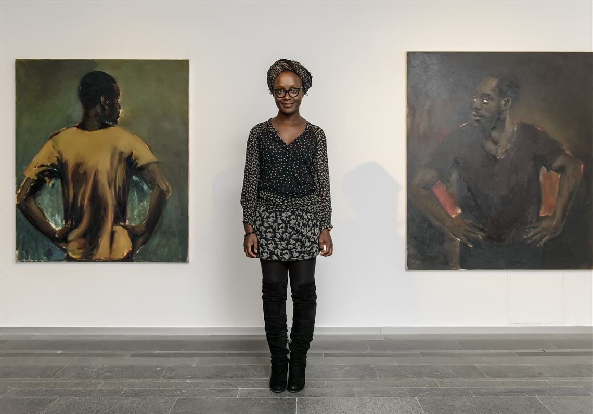

Rätselhafte Porträts jenseits von Raum und Zeit

Lynette Yiadom-Boakye (*1977) ist eine britische Malerin und Schriftstellerin mit ghanaischen Wurzeln. Sie ist bekannt für ihre eindringlichen Porträts fiktiver schwarzer Menschen. Anstatt mit realen Modellen zu arbeiten, erschafft sie ihre Figuren aus der Vorstellungskraft, Erinnerungen und Skizzenbüchern. Ihre Subjekte existieren in zeitlosen, nicht näher definierten Räumen und tragen oft geheimnisvolle Titel, die wie Zeilen aus ungeschriebenen Gedichten wirken.
A Passion Like No Other – 2012
Die dunklen, erdigen Töne und die lockeren, aber gezielten Pinselstriche sind charakteristisch für sie. Die Figur scheint in Gedanken versunken, der Betrachter bleibt ohne Kontext und muss die Geschichte hinter dem Bild selbst erfinden.
Yiadom-Boakyes Porträts arbeiten oft mit der Inszenierung von Männlichkeit und Ruhe. Der dunkle Hintergrund verschmilzt fast mit der Kleidung der Figur, was eine fast geisterhafte, isolierte Atmosphäre schafft.
Tie the Temptress to the Trojan – 2016
Ihre poetischen Bildtitel lassen viel Raum für Interpretation. Sie illustrieren nicht das Gemalte, sondern dienen als zusätzliches "Material", ähnlich einer weiteren Farbe auf der Leinwand.
📍Carnegie Museum of Art
Yiadom-Boakye stellt schwarze Körper fernab von historischen Traumata oder politisierter Dokumentation dar. Ihre Figuren dürfen einfach "sein" – in Muße, beim Nachdenken oder im stillen Dialog.
Weitere Werke und Ausstellungen finden sich u.A. auf der Website der
Tate Gallery
sowie bei der
Corvi-Mora Galerie
in London.